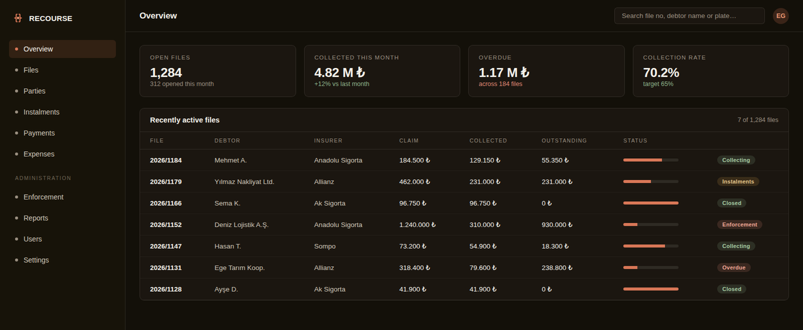
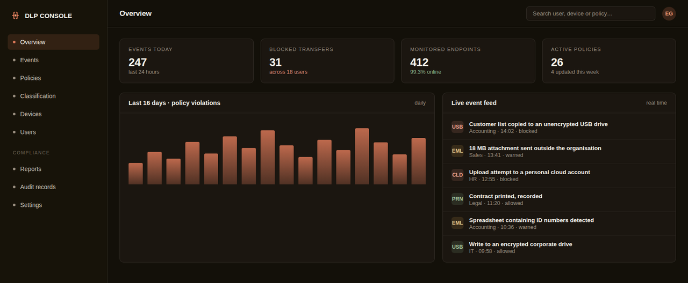

Recourse Tracking System
The problem it solves
Recourse files were tracked in spreadsheets. Who paid which instalment, which file had expired, how much was collected this month — every answer had to be assembled by hand, and was out of date the moment it was produced.
A system that brings the entire process into one place, from the opening of a recourse file to the closing of the collection. Instalments, payments, expenses and interest calculations were lifted out of manual spreadsheets into an auditable structure. Every historical file in a database built years earlier was migrated without a single loss. Because the system can run on in-house servers, case data never leaves the organisation.

Technology
Highlights
- Files, parties, instalments and payments on one screen
- Automatic handling of expense and interest calculations
- Complete migration from the legacy system
- Incoming e-mail read and matched to the right file
- Information extracted from documents via OCR
- Automatic alerts on overdue files
- Live view of the collection rate
- Able to run entirely on in-house servers
Data Loss Prevention (DLP)
The problem it solves
Nobody knew where company data was going. If an employee copied the customer list to a USB stick or mailed it to a personal address, it went unnoticed — yet under data protection law you have to be able to show a record of it.
We stop company data from leaving without authorisation: e-mail attachments, USB drives, cloud uploads and printed output included. Sensitive data is classified first, then every action touching it is logged. Policies are written for the individual organisation; we do not apply the same template to everyone.

Technology
Highlights
- Sensitive data classification and labelling
- Control over USB, e-mail and cloud channels
- Immediate reporting of policy violations
- Records and evidence for data protection audits
- Live monitoring per endpoint
- Policies designed for your organisation
- Printed output recorded
- Periodic review reports
Major Damage Claim Management
gokhan.ai — AI workspace
The problem it solves
Staff were uploading company documents to public AI tools. Nobody knew what had been uploaded, by whom, or where that data ended up.
A closed, organisation-managed workspace where staff upload Excel, PDF and Word documents and put questions to an AI. Who did what and when is logged; the conversations themselves stay private, and not even administrators can read them. No screen opens until the privacy notice has been accepted, and sign-ins from a new device are flagged separately.

Technology
Highlights
- Upload Excel, PDF and Word for analysis
- User management and sign-in records
- Privacy notice and consent record
- Device recognition and new-device alerts
- Per-user usage limits
- Conversations are private — admins cannot read them
- Same experience on phone and desktop
- Documents summarised server-side to cut cost